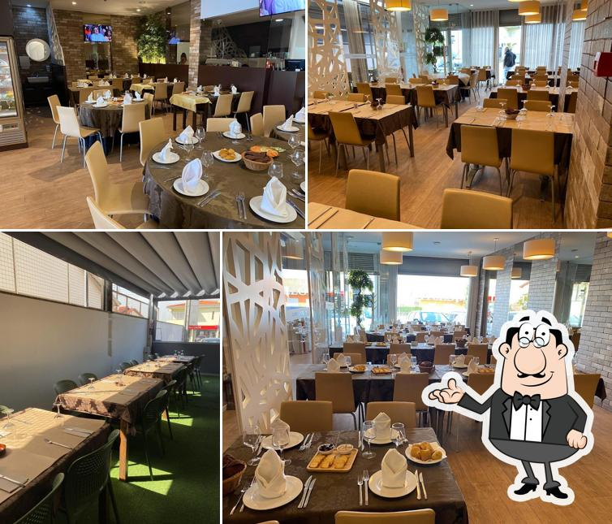

🥐
Pastelaria Artesanal
Pastéis de nata, croissants amanteigados, bolos de aniversário e toda a doçaria portuguesa feita com receitas tradicionais. O cheiro que acorda Palmeira de manhã.
Café, Pastelaria & Refeições Caseiras em Palmeira, Braga
O Doçuras é muito mais do que um café: é um ponto de encontro onde a tradição da pastelaria portuguesa se une a um atendimento genuinamente caloroso. Situado na Avenida do Cávado, em Palmeira, o espaço acolhe clientes de manhã cedo à tarde, com bolos artesanais, refeições de almoço e o melhor café da zona.
Fundado como um negócio independente e familiar, o Doçuras cresceu graças à qualidade dos seus produtos e ao trato especial que dedica a cada pessoa que entra pela porta. Cada visita é uma experiência que mistura sabor, conforto e boa companhia.

★★★★★"Excelente experiência, recomendo vivamente este lugar acolhedor com um serviço excecional."
— Duarte
★★★★★"Serviço espetacular e ambiente muito acolhedor. A qualidade da comida é simplesmente extraordinária."
— Williams
★★★★★"Todos os aspetos são excelentes — comida, serviço e ambiente. Uma relação qualidade-preço perfeita."
— António
Avaliações recolhidas no RestaurantGuru · Facebook · Google
Passe por nós para um pequeno-almoço especial, um almoço reconfortante ou simplesmente um café com amigos. Estamos à sua espera em Palmeira, Braga.
Ligar agora Enviar e-mail